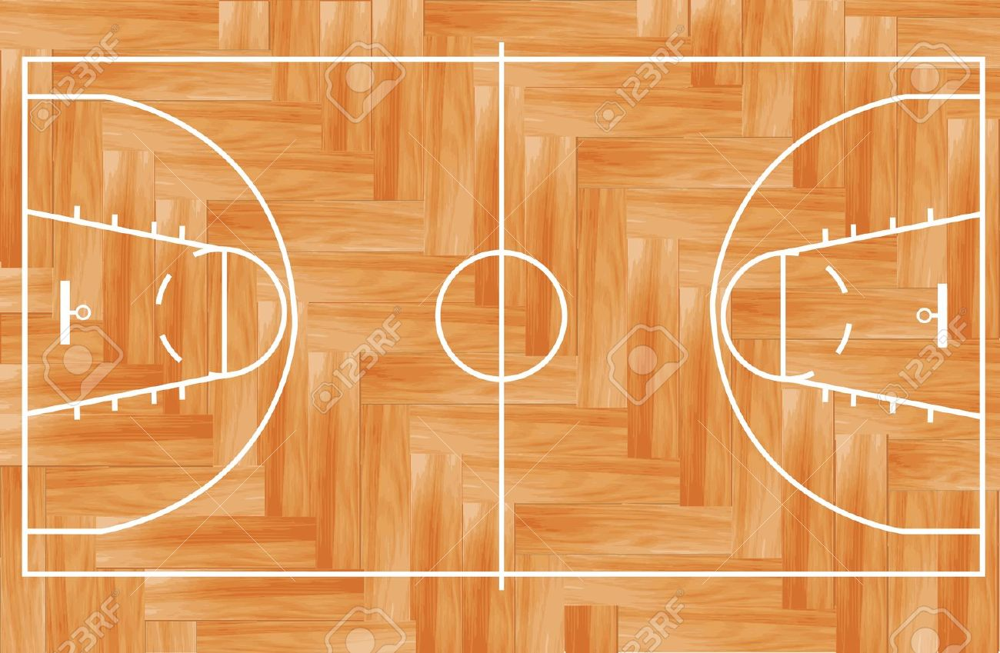

Actualidad|RealTetris
El Real Tetris Balompié sorprende al mundo del fútbol con su revolucionario enfoque táctico
El "Táctico Tetris" del Real Tetris Balompié: una nueva forma de jugar al fútbol que está dejando a todos desconcertados.
17 de octubre de 2023
En una movida que ha dejado atónitos a fanáticos y expertos por igual, el Real Tetris Balompié, un modesto club de fútbol con sede en una pequeña ciudad, ha sacudido los cimientos del deporte rey con su enfoque táctico revolucionario. El equipo, que anteriormente luchaba en las divisiones inferiores, se ha convertido en el centro de atención tras su sorprendente ascenso a la primera división.
El nombre del club, "Tetris," no es una coincidencia, ya que su estrategia se asemeja a los movimientos en el famoso juego de bloques. El entrenador del equipo, Juan Pérez, ha ideado un sistema de juego único que se basa en la creación de patrones en el campo, similar a cómo se encajan las piezas en el juego Tetris. Cada jugador tiene un papel específico y se mueve de acuerdo con una pauta predefinida, lo que hace que el equipo sea altamente impredecible para sus oponentes.
En lugar de depender de una formación tradicional, el Real Tetris Balompié organiza a sus jugadores en función de la disposición de sus oponentes, lo que ha desconcertado a los rivales y ha llevado al equipo a una serie de sorprendentes victorias. Los fanáticos del club han bautizado este enfoque como el "Táctico Tetris," y la prensa deportiva de todo el mundo no ha dejado de hablar de ello.
El presidente del club, Miguel Sánchez, ha expresado su emoción por la inusual estrategia:
El Real Tetris Balompié se ha convertido en el equipo a seguir esta temporada, y los seguidores del fútbol están ansiosos por ver si esta audaz táctica les llevará a la gloria en la primera división. La pregunta que todos se hacen ahora es si otros equipos intentarán imitar el enfoque táctico del Real Tetris Balompié o si este seguirá siendo un fenómeno único en el mundo del fútbol.